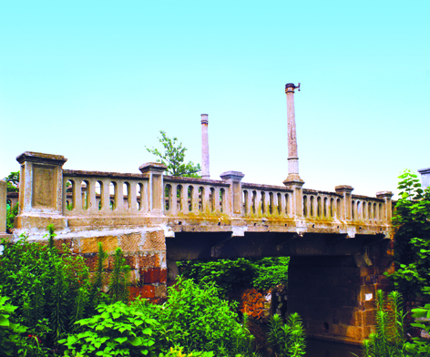

鉏家桥
嘉兴市文物保护网 · 市级文物保护单位 · 2014-06-16 · 原文

鉏家桥位于嘉兴市南湖区解放街道航明社区光明街，建造于民国22年（1933），东西横跨鉏家滩，是一座水泥和石块结合的桥，全长15.23米，宽3.9米，桥面距水面为3米。东西桥墩用石块砌筑，桥梁和桥面为水泥浇筑，并设有水泥护栏，望柱塑成方形，桥面中间护栏上立有两根水泥灯柱。1989年在老桥东又建新桥，此桥逐渐废弃。鉏家桥造型简洁，风格别致，带有典型的民国特征，为研究嘉兴近代桥梁建筑提供了实物资料，具有较高历史和艺术价值。2010年公布为嘉兴市级文物保护单位。